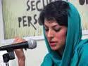

|
|
|
Browsing
Contact Us |
Campaigners |
Face to Face |
Tribune |
Interview |
News |
On the Web |
One Million |
Report
Farsi | Français | German | Italian | Spanish | العربية Also in this section
|
 Revolutionary Court Agrees to Integrate 2 Cases Brought against Shiva Nazar AhariTuesday 15 June 2010 View online : WLUML In an interview with the news agency, Reporters and Human Rights Activists of Iran on 12 June 2010, Shiva Nazar Ahari’s lawyer, Mohammad Sharif, said: "After two different cases brought against Nazar Ahari were integrated, the [new date for the court] session has not yet been declared to us." Sharif announced that his client had been officially accused of ’Moharebeh’ (enmity against God), and acts against national security through collective action and participation in the demonstrations. Such charges attract very severe sentences under Iran’s Penal Code and Nazar Ahari and could face the death penalty. Please continue to write to the Iranian authorities calling for Iran to abide by its commitments under international laws and its own constitution. The interview in the original Farsi can be found here:http://www.rhairan.biz/archives/15681. Background: Shortly after the disputed presidential elections on 12 June 2009, Shiva Nazar Ahari, a young human rights activist and a member of the Committee of Human Rights Reporters (CHRR), was arrested and kept for months in solitary confinement and subjected to extreme methods of interrogation. After spending more than 100 days in prison, she was released on a $200,000 bail in September 2009. Nazar Ahari, who had re-started her activism immediately upon her release from prison, was arrested once more on 20 December 2009 along with other members of CHRR when a bus taking several political and civil activists to Ayatollah Montazeri’s funeral in Qom was stopped by security forces in Tehran’s Enghelab Square. Nazar Ahari was kept in a cage-like cell so small that she could barely move her limbs. The 3rd Branch of Evin Court informed Nazar Ahari of two charges. One is ‘creating public anxiety through writing on CHRR’s website and other sites’, a charge which other CHRR members share. Her second charge is ‘acts against national security through participation in gatherings on 4 November 2009 and 7 December 2009 gatherings.’ She has denied these charges because she was not present at those gatherings. Her lawyer, Mohammad Sharif, requested that the two cases be integrated, possibly to speed up the trial process. Our grave human rights concerns: 1.Nazar Ahari was subjected to arbitrary arrest and deprivation of her liberty. Article 9 of the 1948 Universal Declaration of Human Rights decrees that "no one shall be subjected to arbitrary arrest, detention or exile"; that is, no individual, regardless of circumstances, is to be deprived of their liberty or exiled from their country without having first committed an actual criminal offense against a legal statute, and the government cannot deprive an individual of their liberty without proper due process of law. 2.Nazar Ahari received an unfair trial. As enshrined in international law, anyone accused of a crime, "shall be entitled to a fair and public hearing by a competent, independent and impartial tribunal established by law." (Article 14 ICCPR). 3.Nazar Ahari has suffered cruel, inhuman and degrading treatment through her solitary confinement, use of extreme interrogation methods and and lack of access to lawyer and family members. The Iranian Constitution forbids the use of torture. Article 7 of the International Covenant on Civil and Political Rights demands that "No one shall be subjected to torture or to cruel, inhuman or degrading treatment or punishment." Article 2 of the United Nations Convention against Torture and Other Cruel, Inhuman or Degrading Treatment or Punishment, (which has not been signed or ratified by Iran) prohibits torture, and states that: This prohibition is absolute and non-derogable. "No exceptional circumstances whatsoever" may be invoked to justify torture, including war, threat of war, internal political instability, public emergency, terrorist acts, violent crime, or any form of armed conflict. Torture cannot be justified as a means to protect public safety or prevent emergencies. Neither can it be justified by orders from superior officers or public officials. 4.Nazar Ahari’s right to life has been threatened by the Iranian authorities because of the punishments attached to charges of ‘acts against national security’ being levied against her. Under the Universal Declaration of Human Rights every human being has the inherent right to life. This right shall be protected by law. No one shall be arbitrarily deprived of his life. Source: Action needed: Addresses: Ayatollah Sadegh Larijani Salutation: Your Excellency General Public Relations Office Tehran Prosecution Office (which the Revolutionary Court prosecutor is part of) High Council for Human Rights (Larijani’s bureau) General Office of International Affairs (in Judiciary): General Prosecutor’s Office |